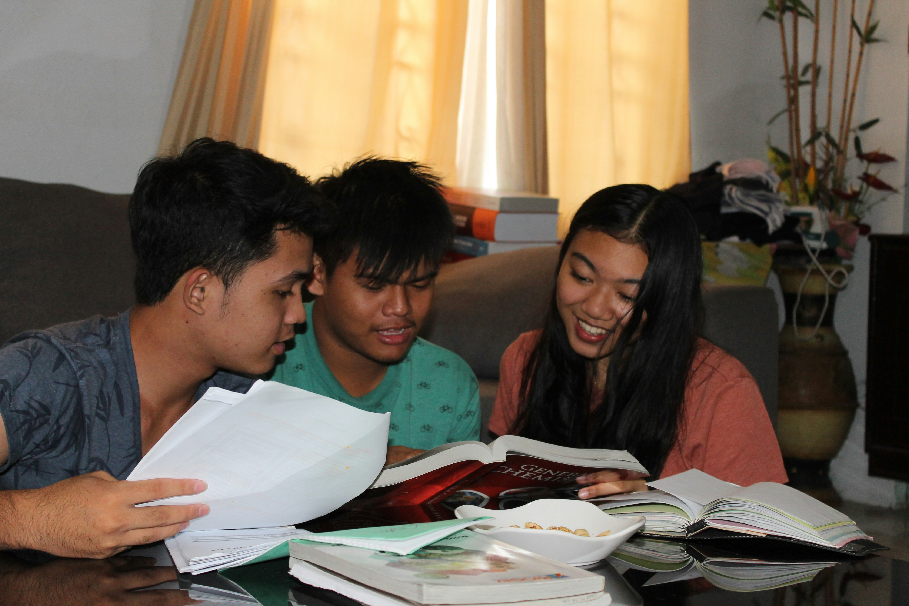

Hi! I'm Nishka. I am also a student who went through "the move". I moved to the US from India right after my sophomore year and I had a really hard time trying to catch up with my peers. I understand how hard it can be to adjust to a new school system, language, and culture after moving to a new country. It can make you feel very uncertain and confused.
